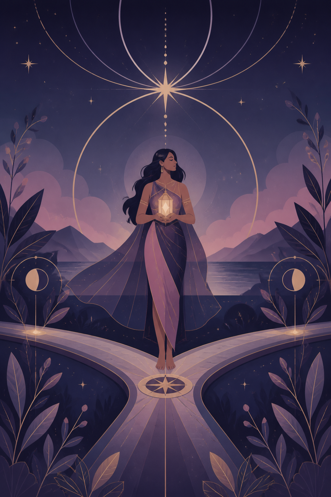

August 20
☀☾
Your daily signal

The Compass
Direction, not urgency.
The strongest path today rewards patience. Favor durable momentum; let noisy names pass without you.
Market-informed · reveal the pattern
The card’s constellation
3 of 5 alignedVIG+0.42%steady wealth
XLV+0.31%defensive orbit
WOMN+0.27%leadership ETF
☾
Founders’ CovenExplore companies with women at the helm
→
Rowan, your counsel: “I’ll show you what changed beneath the reading.”